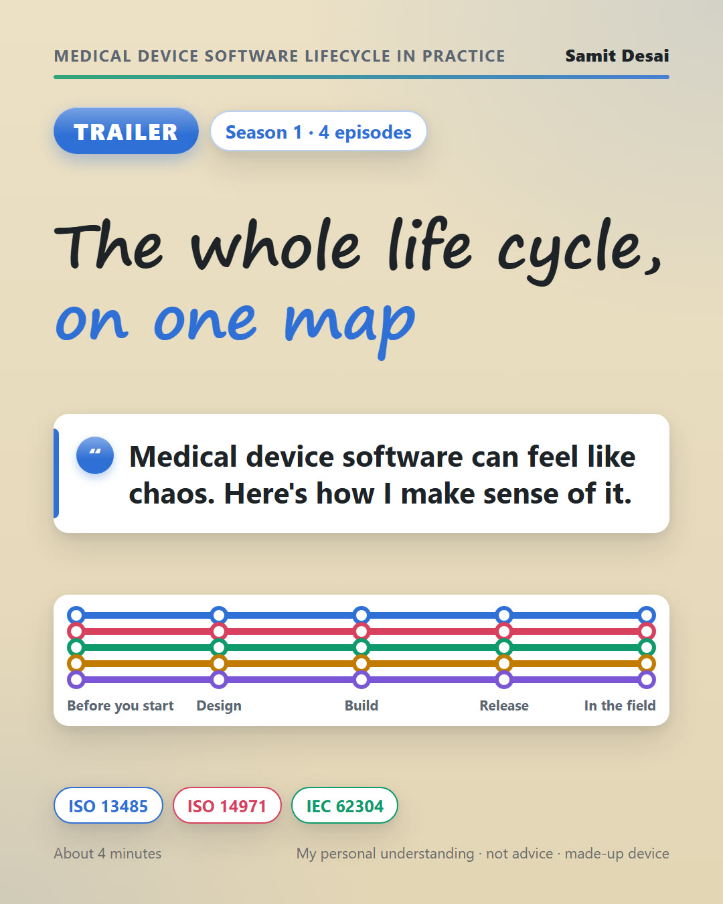
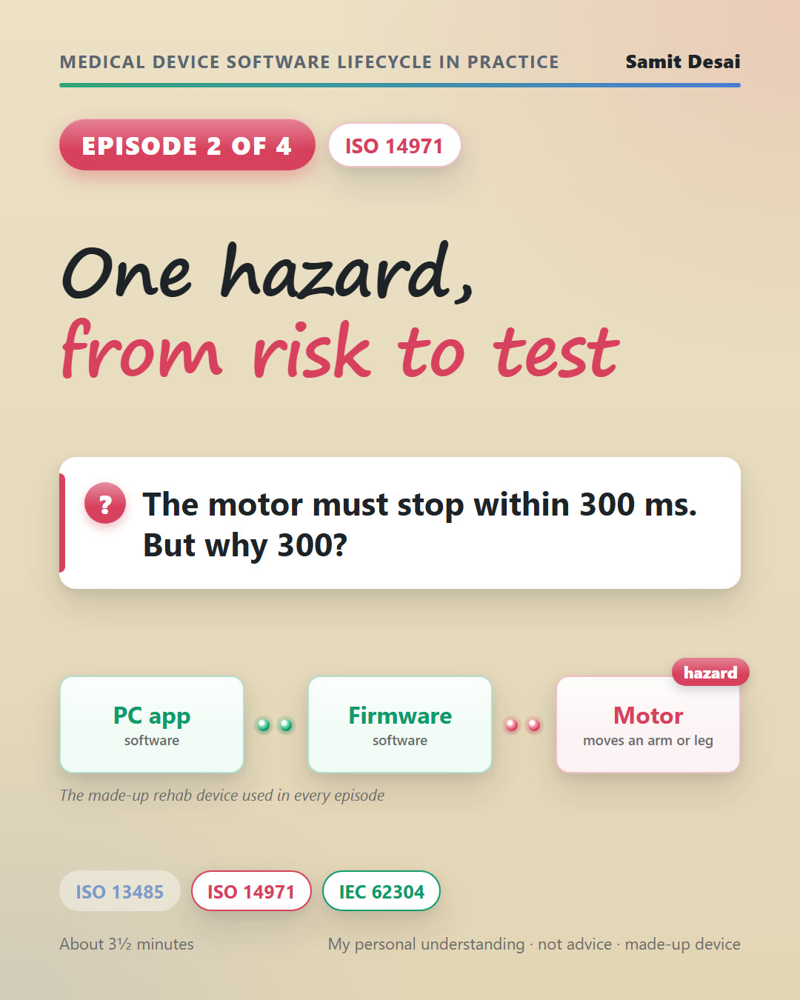
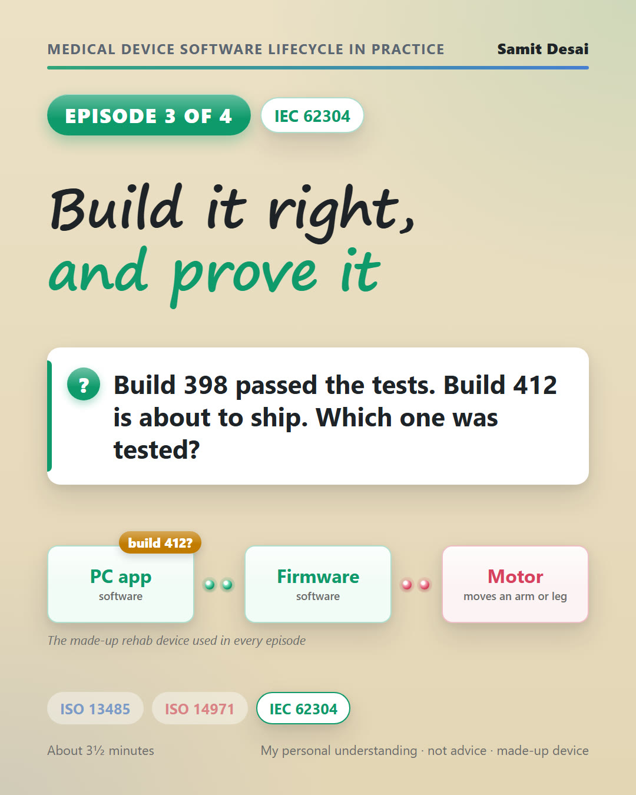
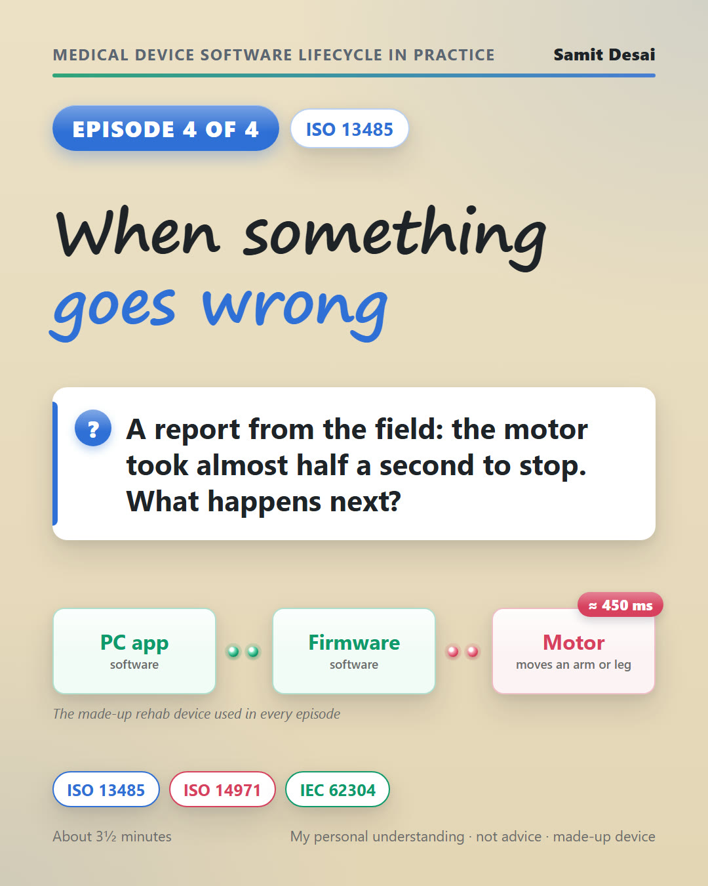

Medical Device Software Lifecycle in Practice
A short series on how software work runs in a regulated medical device team: the rules behind it, the three standards that do most of the work, and the whole life cycle as one map. It's written from the engineering lead's side, as my own interpretation. Every example uses one made-up device: a motorized rehab device in which a PC app sends settings to controller firmware that drives a motor moving a patient's arm or leg.
Watch: a trailer and four short episodes

The whole life cycle, on one mapMedical device software can feel like chaos. Here's how I make sense of it: the rules as plain questions, in the order a device lives through them. ▶ Watch · 3:58 One fix, through the software life cycleWhy do device teams follow a common set of steps? One made-up feature travels from a therapist's question to release, through IEC 62304.
▶ Watch · 4:39
One fix, through the software life cycleWhy do device teams follow a common set of steps? One made-up feature travels from a therapist's question to release, through IEC 62304.
▶ Watch · 4:39

One hazard, from risk to testThe motor must stop within 300 milliseconds. But why 300? One made-up hazard, followed from risk to requirement to test, with ISO 14971 and IEC 62304. ▶ Watch · 3:42
Build it right, and prove itBuild 398 passed the tests, and build 412 is about to ship. Which one was tested? Building device software under IEC 62304, with the evidence made as you go. ▶ Watch · 3:40
When something goes wrongA report from the field: the motor took almost half a second to stop. Four paths after release, and the audit. ▶ Watch · 3:29Who it's for
- Software engineers moving into medical devices
- Engineering leads and managers in regulated teams
- QA and regulatory people who want to see the engineering side
Standards and versions
Checked against public sources in October 2026: free official texts where they exist, and for the paid standards, clause numbers and public summaries. Each page lists its own sources.
- IEC 62304:2006 + Amendment 1:2015. A second edition is in drafting and not yet published.
- ISO 14971:2019
- ISO 13485:2016. FDA's Quality Management System Regulation (21 CFR 820) has incorporated it by reference since February 2, 2026.
Disclaimer
This is my personal understanding and experience, shared for learning. It is not legal, regulatory or professional advice, and it is not a statement of what you or your organization must do. Standards and regulations change and can be read in different ways. Check the current official texts, and follow your own quality system and procedures, your notified body or regulator, and qualified advisers. The device, scenarios and numbers are made up and do not describe any real product, company or event. Views are my own, not those of any current or past employer. I accept no responsibility or liability for actions taken based on this material. Narration: AI voice made from my own voice. I used an AI assistant for research, fact-checking and drafting; the judgment and any mistakes are mine.
About
Samit Desai, Software Team Lead in medical device software (.NET, Azure IoT, regulated development). LinkedIn